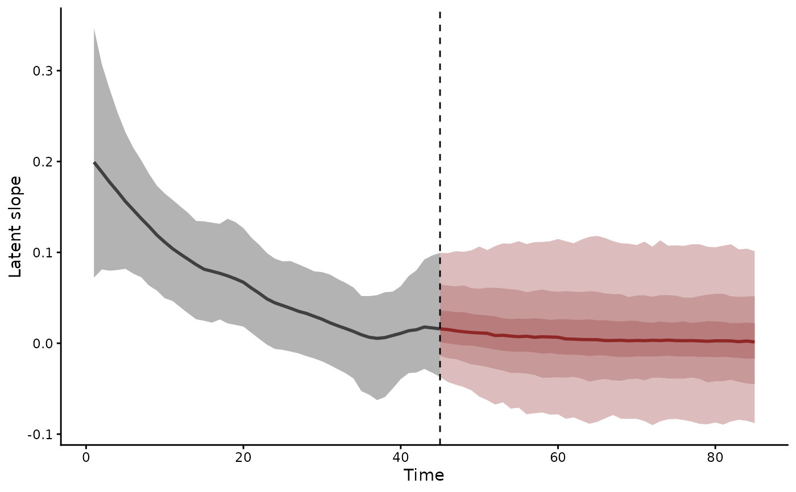
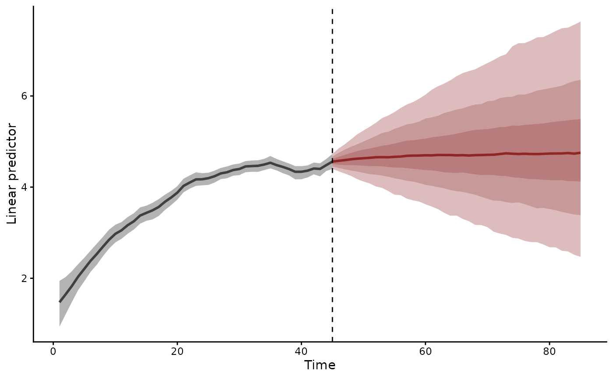
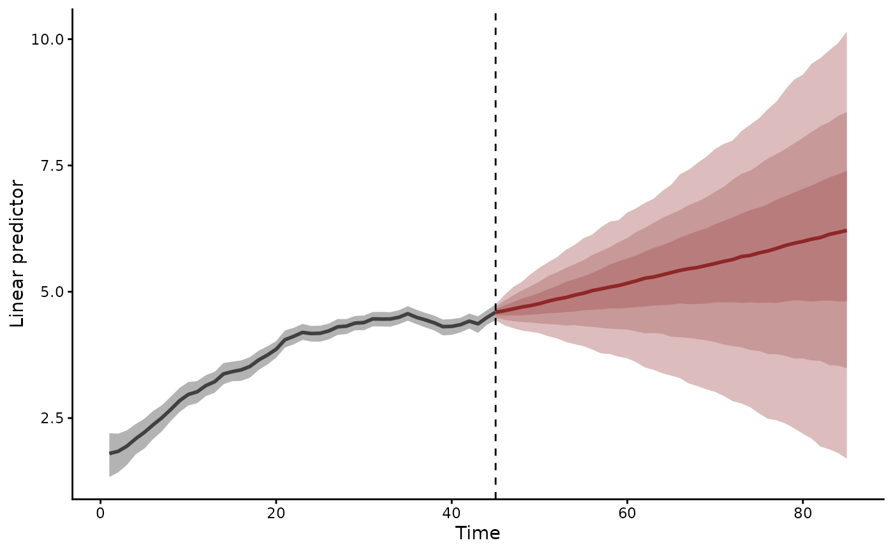
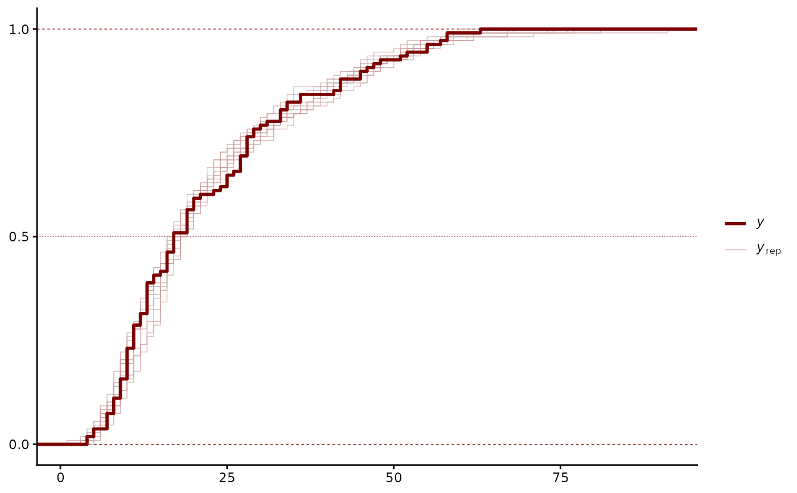
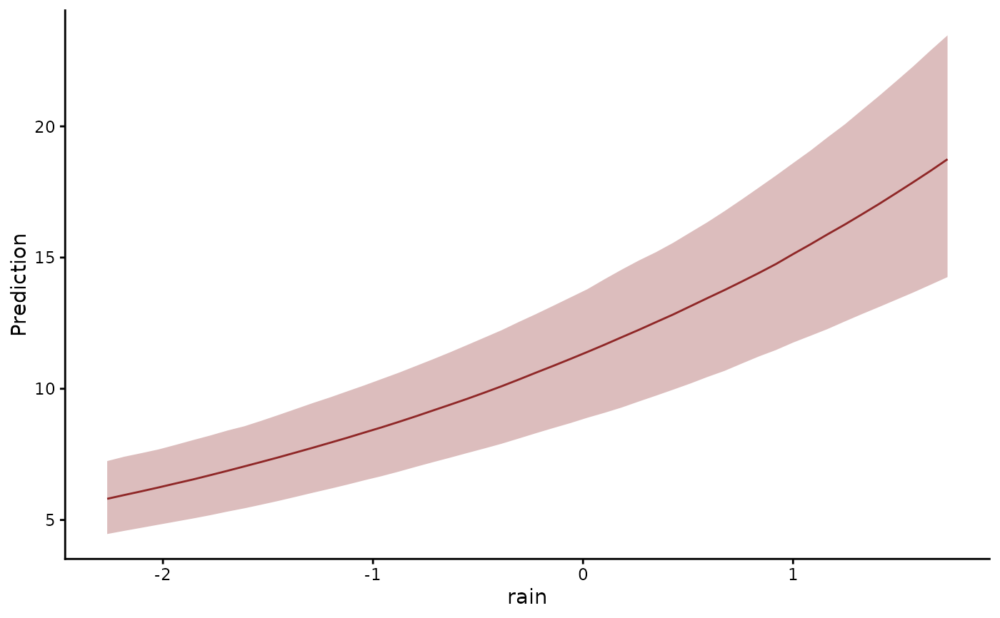
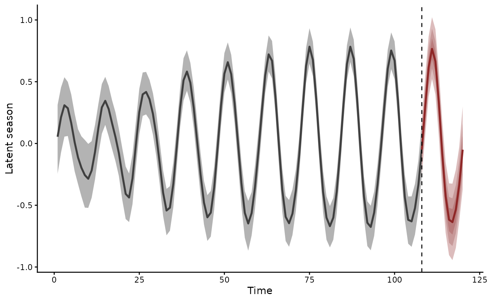

A latent level that moves with a latent growth rate, the local linear trend of Harvey (1989). Each latent process carries a level and a slope:
Usage
LLT(
time = NA,
series = NA,
damped = FALSE,
cor = NULL,
gr = NA,
subgr = NA,
n_lv = NULL,
trend_map = NULL,
df = Inf,
season = NULL,
harmonics = NULL
)Arguments
- time
The unquoted name of the
numericorintegervariable indatathat holds each row's time. Defaults totime.- series
The unquoted name of the
factorvariable indatathat names each row's series. Its levels fix the order of the series. A trend needs this column even for a single series. Defaults toseries.- damped
Logical. Estimate a damping coefficient for the slope? Default
FALSE.- cor
Logical. Include correlated process errors as part of a multivariate normal process model? IfTRUEand ifn_series > 1in the supplied data, a fully structured covariance matrix will be estimated for the process errors.AR()andRW()default toNULL, which resolves toFALSEfor an ungrouped trend and toTRUEwhenevergrnames a grouping variable: a grouped trend estimates correlations among thesubgrunits within each level ofgr, which is the modelgrexists to specify.VAR()andZMVN()always estimate correlations and refusecor = FALSE, as doAR(gr = ...)andRW(gr = ...).CAR()defaults toFALSE.- gr
An optional grouping variable, which must be a
factorin the supplieddata, for setting up hierarchical residual correlation structures. If specified, this sets up a model where the residual correlations for a specific level ofgrare modelled hierarchically:\(\Omega_{group} = \alpha_{cor}\Omega_{global} + (1 - \alpha_{cor})\Omega_{group, local}\),
where \(\Omega_{global}\) is a global correlation matrix, \(\Omega_{group, local}\) is a local deviation correlation matrix and \(\alpha_{cor}\) is a weighting parameter controlling how strongly the local correlation matrix \(\Omega_{group}\) is shrunk towards the global correlation matrix \(\Omega_{global}\) (larger values of \(\alpha_{cor}\) indicate a greater degree of shrinkage, i.e. a greater degree of partial pooling).
A grouped trend estimates correlations among the
subgrunits within each level ofgr. Withoutsubgr, the series column names those units.cordefaults toTRUEfor such a trend. An explicitcor = FALSEis refused.Within a
VAR()it sets up a hierarchical panel vector autoregression. Each group learns its autoregressive, moving-average and correlation matrices from shared hyperparameters. The groups do not interact.Two constraints apply to hierarchical trend models:
grmust be constant within each series (each series belongs to a single group). Models withgrvarying within a series are rejected at validation time.Every group must hold the same number of series. The Stan program sizes each group's correlation block from one shared count. Validation refuses unbalanced groups before fitting.
- subgr
A subgrouping
factorvariable naming the time series within each level ofgr. Defaults toseries. A model with hierarchical correlations builds its series fromgrandsubgr, anddatathen needs noseriescolumn.For example, to model counts of several species (
speciesindata) across three regions (region) with residuals correlated within regions, specifygr = regionandsubgr = species.mvgam()then builds the series asseries = interaction(gr, subgr, drop = TRUE, sep = "_",lex.order = TRUE)A region
r1and a speciessp1give the series"r1_sp1". The levels sort lexically.summary(),plot()andforecast()all label that series"r1_sp1". Aseriescolumn that disagrees with the derived series is replaced by it, with a warning.- n_lv
The number of latent factors to estimate for dynamic factor models. When
n_lvis smaller than the number of series, the latent processes are modelled asn_lvfactors with estimated loadings onto the series. Defaults toNULL, in which case one latent process is used per series.- trend_map
Optional specification of which latent process each series maps onto. It fixes the loadings of a dynamic factor model. See
mvgamfor the accepted formats. Defaults toNULL.- df
Degrees of freedom for the latent process innovations. Defaults to
Inf, which gives Gaussian innovations: a t with infinite degrees of freedom is a normal. Setdf = NAto estimate them, or supply a number above2to fix them.Finite degrees of freedom let the latent process absorb an occasional large shock while
sigma_trendstays at the scale of ordinary variation. That suits boom-and-bust population series and outbreak dynamics. The innovations follow a multivariate t. Because it shares one innovation scale across the series at each time point, large innovations tend to occur together. Each series keeps its own direction and magnitude. A shock in one series says nothing about the sign of the others. One series can also stay unmoved by an event that moves its neighbours.corsets the correlation between series exactly as it does for Gaussian innovations. The degrees of freedom set how heavy the tails of the innovations are.When
df = NAthe degrees of freedom are estimated asnu_trend, with a defaultgamma(4, 0.3)prior. Thepriorargument replaces it, for exampleprior(gamma(2, 0.1), class = "nu_trend").get_priorlistsnu_trendwith the other trend classes.Three caveats apply. The bound of
2is required. Below it the innovations have no finite variance. An autoregressive trend then has no stationary covariance to start from. Above it, the first states of an autoregressive trend take the stationary mean and covariance. Their distribution matches the stationary law exactly under Gaussian innovations alone. A finite mix of t variates has heavier tails than the infinite sum that defines that law. The degrees of freedom are informed only through the tail of the latent process. They are weakly identified in short series: below roughly 200 time points, the posterior stays close to its prior.VAR()samples its states directly andPW()has no innovations. Neither takesdf.- season
Optional numeric vector of seasonal periods in time steps, each above 2, such as
12for monthly data orc(7, 365.25)for daily data. Periods need not be whole. DefaultNULLfits no season.- harmonics
Optional integer vector with the number of trigonometric harmonics of each period, each below half its period. Fewer harmonics give a smoother seasonal shape. Defaults to the most each period allows, up to 10.
Details
$$\mu_t = \mu_{t-1} + \beta_{t-1} + \eta_t$$ $$\beta_t = \phi \beta_{t-1} + \zeta_t$$
The level shocks \(\eta_t\) have scale sigma_trend and the slope
shocks \(\zeta_t\) scale sigma_slope_trend. A small
sigma_slope_trend gives a trend that keeps its direction. A zero
scale gives a random walk with a fixed drift. damped = TRUE
estimates \(\phi\) on (0, 1) as ar1_slope_trend, which pulls
the growth rate back toward zero over the horizon (Gardner and
McKenzie 1985). The undamped trend has \(\phi = 1\). Its
forecasts extend the current growth rate.
The level shocks take the innovation structure of RW(): cor
correlates them across series, gr and subgr pool their
correlations hierarchically and df gives them a multivariate t.
The slope shocks are Gaussian and take the level's correlation
matrix with scales of their own.
The slope starts at a free value, init_slope_trend, damped or not,
as in the damped trends of exponential smoothing. Damping serves a
series that starts with fast growth and slows. The initial slope of
such a series can lie far outside the slope's stationary
distribution. The level starts at its first shock. The observation
intercept carries its mean.
Default priors scale with the number of time points \(N\) and
widen by the factor \(s\) that brms applies to its own default
scales, as get_prior() describes. The shock scales sigma_trend
and sigma_slope_trend take gamma(2, .) priors. At their prior
medians, the level shocks and the slope shocks each move the trend
over the series by a standard deviation of \(s\). The slope's
median accounts for the damping at the median of its prior. A
gamma(2, .) density rises from zero. It keeps a nearly fixed level
or slope within reach and steers the sampler away from the boundary
at zero.
init_slope_trend ~ normal(0, 2 / r), where
\(r = 1 + \phi + \dots + \phi^{N - 2}\) is how far a unit
initial slope moves the level by the end of the series, gives the
initial slope \(2 s\) of growth over the series at one prior
standard deviation. An undamped slope has \(r = N - 1\). A factor
model with every loading sampled measures both in units of its
level's spread over the series,
\(\sqrt{N}\). Its loadings carry \(s\). ar1_slope_trend takes
beta(18, 2), with median 0.91. get_prior() prints the resolved
values.
A smooth or linear function of time in either formula competes with
the slope for the same variation. mvgam() warns when the time
variable appears in one. The slope variance is weakly identified on
short series: LLT() warns below 20 time points and refuses fewer
than 5. On informative data, such as large counts, a chain started
at random can stall far from the posterior. init = "pathfinder"
in mvgam() starts every chain from Stan's Pathfinder
approximation.
In a factor model with every loading sampled, the loadings set
each factor's scale and the level shocks take unit scale. The
factors share one sigma_slope_trend and one ar1_slope_trend.
The model is then unchanged under a rotation of the factors. The QR
rotation that RW() factors take identifies the loadings. A trend
with no level noise would need an infinite slope scale. A factor
model always keeps some level noise. A
trend_map that fixes loadings keeps one slope scale per factor.
Seasonality:
season adds a stochastic season \(\gamma_t\) to the level, the
trigonometric form of Harvey (1989) with the non-integer and multiple
periods of De Livera et al. (2011). The latent state is
\(\mu_t + \gamma_t\). Harmonic \(j\) of period \(s\)
holds a state pair that turns by \(\lambda_j = 2 \pi j / s\) at
each step and takes Gaussian shocks of scale sigma_season_trend:
$$\gamma_{j,t} = \cos\lambda_j \gamma_{j,t-1} + \sin\lambda_j \gamma^*_{j,t-1} + \omega_{j,t}$$ $$\gamma^*_{j,t} = \cos\lambda_j \gamma^*_{j,t-1} - \sin\lambda_j \gamma_{j,t-1} + \omega^*_{j,t}$$
Common periods are 4 for quarterly data, 12 for monthly data, 52.18
for weekly data over years, 7 and 365.25 for daily data and 24 and
168 for hourly data. LLT(season = 12, harmonics = K) states the
season that AddTrig(period = 12, frequencies = 1:K) states in
bsts.
The season is the sum of the first states over the harmonics. A
small sigma_season_trend keeps the seasonal shape nearly fixed. A
zero scale fixes it, as a cyclic smooth does. A larger scale lets
the shape drift. Every harmonic of a process shares one scale.
Each harmonic averages to zero over its period, which separates the
season from the level and the observation intercept. Two periods
sharing a harmonic, such as 6 and 12 with three or more harmonics,
are refused. A period longer than the data overlaps the slope and
draws a warning. The starting pairs init_season_trend are
estimated under one prior for both states of every harmonic. A
rotation of a pair leaves that prior unchanged, which places the
phase at the first time point with no further choice. Seasonal
shocks are independent across series. In a factor model each factor
has its own season, mapped to the series through the loadings.
sigma_season_trend takes a gamma(2, .) prior whose median puts
the season's drift over the series at \(s / 4\). A season that
drifts by its own size over the series would barely repeat. Each
starting state takes normal(0, s / sqrt(K)) over \(K\)
harmonics, which gives the starting seasonal pattern a root mean
square of \(s\). get_prior() prints the resolved values.
Components:
hindcast.mvgam(), forecast.mvgam() and plot(type = "trend")
report the parts of the trend through component. "level" is the
stochastic level and "slope" its growth per time step. "season"
is the season. "predictor" holds the effects of the trend
formula's covariates. Several names add their components:
component = c("level", "predictor") gives the level with the
covariate effects it moves with. Level, season and predictor sum to
the trend. A factor model reports each component at the series
grain, through its loadings. A rotation of the factors leaves them
unchanged.
References
Harvey, A. C. (1989). Forecasting, Structural Time Series Models and the Kalman Filter. Cambridge University Press.
Gardner, E. S. and McKenzie, E. (1985). Forecasting trends in time series. Management Science, 31:1237-1246.
De Livera, A. M., Hyndman, R. J. and Snyder, R. D. (2011). Forecasting time series with complex seasonal patterns using exponential smoothing. Journal of the American Statistical Association, 106:1513-1527.
See also
RW(), PW(), trend_constructors, get_prior() for the
scale of the default priors, hindcast.mvgam() and
forecast.mvgam() for the level, the slope and the season,
series_to_mvgam() for the periods a ts, msts or tsibble
carries
Other trend models:
PW(),
RW(),
ZMVN(),
list_trend_types(),
lv_axis()
Examples
# \dontrun{
# A series that grows fast, then slows: its slope starts at 0.25
# and shrinks by a factor of 0.93 at each step
set.seed(2)
n_t <- 85
slope <- 0.25 * 0.93^(0:(n_t - 1))
dat <- data.frame(
time = 1:n_t,
series = factor("s1"),
y = rpois(n_t, exp(1 + cumsum(slope) + cumsum(rnorm(n_t, 0, 0.03))))
)
# Fit the first 45 points, while the series is still growing
mod <- mvgam(
y ~ 1,
trend_formula = ~ LLT(damped = TRUE),
data = dat[1:45, ],
family = poisson(),
chains = 2,
silent = 2
)
#> Warning: 13 of 2000 (1.0%) transitions ended with a divergence.
#> See https://mc-stan.org/misc/warnings for details.
# The posterior for `ar1_slope_trend` covers the simulated 0.93
summary(mod)
#> Family: poisson
#> Links: mu = log
#> Formula: y ~ 1
#> Data: dat[1:45, ] (Number of observations: 45)
#> Trends: LLT
#> Draws: 2 chains, each with iter = 2000; warmup = 1000; thin = 1;
#> total post-warmup draws = 2000
#>
#> == Observation Model ==
#> Regression Coefficients:
#> Estimate Est.Error l-95% CI u-95% CI Rhat Bulk_ESS Tail_ESS
#> Intercept 1.46 0.27 0.90 1.98 1.00 1580 1338
#>
#> == Trend Model ==
#> Trend Specific Parameters:
#> Estimate Est.Error l-95% CI u-95% CI Rhat Bulk_ESS
#> sigma_trend[s1] 0.08 0.03 0.02 0.14 1.00 589
#> ar1_slope_trend[s1] 0.93 0.03 0.85 0.98 1.00 1251
#> init_slope_trend[s1] 0.20 0.07 0.07 0.35 1.00 1209
#> sigma_slope_trend[s1] 0.01 0.01 0.00 0.03 1.00 960
#> Tail_ESS
#> sigma_trend[s1] 735
#> ar1_slope_trend[s1] 1094
#> init_slope_trend[s1] 1223
#> sigma_slope_trend[s1] 1232
#>
#> Draws were sampled using sampling(NUTS). For each parameter, Bulk_ESS
#> and Tail_ESS are effective sample size measures, and Rhat is the potential
#> scale reduction factor on split chains (at convergence, Rhat = 1).
#>
#> Next steps:
#> - `pp_check(fit)`: posterior predictive checks
#> - `forecast(fit, newdata = ...)`: out-of-sample forecasts
#> - `lfo_cv(fit)`: leave-future-out model comparison
#> Use `how_to_cite(fit)` for a methods paragraph and `methods_md(fit)` for its equations.
# The slope decays toward zero over the fitted times and the horizon
plot(forecast(mod, newdata = dat[46:85, ], type = "trend",
component = "slope"))

# On the link scale the damped forecast levels off. An undamped slope
# carries the last growth rate forward.
plot(forecast(mod, newdata = dat[46:85, ], type = "link"))

mod_undamped <- update(mod, trend_formula = ~ LLT())
#> Warning: 15 of 2000 (1.0%) transitions ended with a divergence.
#> See https://mc-stan.org/misc/warnings for details.
plot(forecast(mod_undamped, newdata = dat[46:85, ], type = "link"))

# Ten years of monthly counts: a slow rise, a seasonal swing that
# widens from 0.3 to 0.9 on the log scale and a rainfall effect
set.seed(3)
n_t <- 120
season <- seq(0.3, 0.9, length.out = n_t) * sin(2 * pi * (1:n_t) / 12)
dat_s <- data.frame(time = 1:n_t, series = factor("s1"),
rain = rnorm(n_t))
dat_s$y <- rpois(n_t, exp(2.5 + 0.008 * dat_s$time + season +
0.3 * dat_s$rain))
# Two harmonics of a twelve-month season, with rainfall acting on the
# latent state. The last year is held out.
mod_s <- mvgam(
y ~ 1,
trend_formula = ~ rain + LLT(season = 12, harmonics = 2),
data = dat_s[1:108, ],
family = poisson(),
chains = 2,
silent = 2
)
#> Warning: 51 of 2000 (3.0%) transitions ended with a divergence.
#> See https://mc-stan.org/misc/warnings for details.
# A small `sigma_season_trend` lets the seasonal shape drift slowly
summary(mod_s)
#> Family: poisson
#> Links: mu = log
#> Formula: y ~ 1
#> Data: dat_s[1:108, ] (Number of observations: 108)
#> Trends: LLT; formula: ~rain
#> Draws: 2 chains, each with iter = 2000; warmup = 1000; thin = 1;
#> total post-warmup draws = 2000
#>
#> == Observation Model ==
#> Regression Coefficients:
#> Estimate Est.Error l-95% CI u-95% CI Rhat Bulk_ESS Tail_ESS
#> Intercept 2.42 0.11 2.18 2.62 1.00 861 821
#>
#> == Trend Model ==
#> Regression Coefficients:
#> Estimate Est.Error l-95% CI u-95% CI Rhat Bulk_ESS Tail_ESS
#> rain 0.29 0.03 0.23 0.35 1.00 2676 1666
#>
#> Trend Specific Parameters:
#> Estimate Est.Error l-95% CI u-95% CI Rhat Bulk_ESS
#> sigma_trend[s1] 0.02 0.01 0.00 0.06 1.00 724
#> init_slope_trend[s1] 0.01 0.01 -0.00 0.02 1.00 736
#> init_season_trend[1,s1] 0.08 0.10 -0.14 0.26 1.00 1212
#> init_season_trend[2,s1] -0.03 0.10 -0.23 0.15 1.00 1080
#> init_season_trend[3,s1] 0.26 0.11 0.03 0.47 1.00 946
#> init_season_trend[4,s1] 0.03 0.10 -0.17 0.22 1.00 1383
#> sigma_slope_trend[s1] 0.00 0.00 0.00 0.00 1.00 736
#> sigma_season_trend[s1] 0.02 0.01 0.01 0.04 1.00 633
#> Tail_ESS
#> sigma_trend[s1] 867
#> init_slope_trend[s1] 760
#> init_season_trend[1,s1] 1265
#> init_season_trend[2,s1] 1204
#> init_season_trend[3,s1] 1178
#> init_season_trend[4,s1] 1114
#> sigma_slope_trend[s1] 268
#> sigma_season_trend[s1] 1027
#>
#> Draws were sampled using sampling(NUTS). For each parameter, Bulk_ESS
#> and Tail_ESS are effective sample size measures, and Rhat is the potential
#> scale reduction factor on split chains (at convergence, Rhat = 1).
#>
#> Next steps:
#> - `pp_check(fit)`: posterior predictive checks
#> - `forecast(fit, newdata = ...)`: out-of-sample forecasts
#> - `lfo_cv(fit)`: leave-future-out model comparison
#> - `conditional_effects(fit)`: covariate effects
#> Use `how_to_cite(fit)` for a methods paragraph and `methods_md(fit)` for its equations.
# Simulated counts match the distribution of the observed ones
pp_check(mod_s, type = "ecdf_overlay")

# The rainfall effect on the expected count
conditional_effects(mod_s, type = "expected")

# The fitted season widens over the years and carries its shape into
# the held-out year
fc_s <- forecast(mod_s, newdata = dat_s[109:120, ], type = "trend",
component = "season")
plot(fc_s)

# Draws of the seasonal shock scale
head(as.data.frame(mod_s, variable = "sigma_season_trend"))
#> sigma_season_trend[s1] .chain .iteration .draw
#> 1 0.01900741 1 1 1
#> 2 0.01821561 1 2 2
#> 3 0.01860650 1 3 3
#> 4 0.01700378 1 4 4
#> 5 0.01894810 1 5 5
#> 6 0.01629572 1 6 6
# }